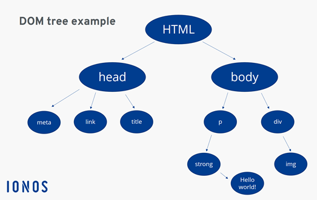

Notes about the reading
Reading:
It is the first time I see objects in JavaScript. I think what I did for my portfolio is a kind of object. I would like to remember some important points I learned in these chapters.
I can create an empty object with this const constname = {}; or with const constname = new Object();
I can call a method by these two ways: objectname.method() or objectname['method']()
I can check if there’s a property inside an object 'property' with objectname or if it’s undefined with the objectname.property !== undefined;
It’s possible to nest objects.
Parse() can take a string from a JSON file to create and object in JavaScript and the stringify() method does the opposite.
The Math.abs() method returns the absolute value of a number, no matter if it’s positive or negative.
Math.ceil, floor, round, trunc, pow and random I already know them, but I put them here to remember they exist.
Sqrt is the abbreviation of square root. Negative numbers return NaN.
Cbrt is the cube root abbreviation. Hypot is the square root of the sum of the squares of all its arguments, it can calculate the hypotenuse of a right-angled triangle.
Math.max or min is the maximum or minimum number from its arguments. In 1,2,3 three would be the max.
I already used the new Date(); and I didn’t know it was an object or I didn’t understand it in that way. Also I didn’t know getDate, Month, Fullyear, etc. were methods.
There are some methods I think are use in scientific codes or to calculate more specific stuff, I just reviewed and checked them.
The getElementById, getElementByTagName, getElementsByClassName and querySelector are methods.
setAttribute is to change the class name of an element.
The addEventListener can be called on a node object or without one. I liked too how this method is used in the examples to interact inside a website, like with the click, mousedown and mouseup.
I save this image to remember what a DOM (Document Object Model) is:

Code excersise:
I did it before my team meeting so, I had to see the solution because I was stucked
Question:
When we can use the The Math.log() method? I understand it returns the natural logarithm of a number but in what kind of situation it would be useful?